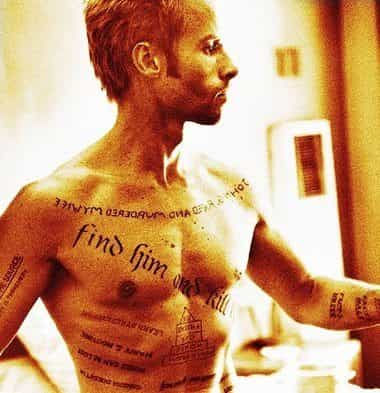

Two friends, living in France, one from the East and one from the West of Europe. Exchanging thoughts on goal setting, weight lifting, life and survival in a decadent yet mindblowingly interesting world.


In Christopher Nolan’s movie, Memento, the protagonist, Leonard, is attacked in his home. His wife is killed and he is injured. He remembers everything until the aggression, but beyond that, all new memories vanish within 15 minutes. Yet he decides to find the murderer and take revenge. With obstinate work, he designs a system of notes and pictures that allows him to move forward despite of his impairment. The principles he uses can boost any kind of endeavor, even for people with no head injury.

Every performance guru will tell you that routines are of foremost importance to achieve goals, yet Leonard’s case makes this statement even more dramatic. His routines allow him to lead an investigation even though he swiftly forgets everything he does. Polaroids help him keep track of crucial information. Words written on papers and tattooed on his skin remind him of his goal and progress. As a bonus, a policeman calls him every morning to explain him who he is and what he is aiming for. All this allows him to work his way towards his goal every day.
Leonard has to be deadly persistent; he has no choice. His routines hold his life together, literally. Yet memories and motivation fade away even in normal people. Maybe not at the same rate and not completely, but they do fade, so everybody can benefit from a system that frames their effort.
Perseverance cannot depend solely on motivation. If one had to make the decision every morning of training or not, writing or not, one would certainly not be persistent on a daily basis. Decision-making is tiresome; unnecessary small decisions drain unnecessarily much time, emotion and energy. These limited resources deserve to be used wisely.
A routine and external instructions that do the decision-reminding for us allow us to spare that daily valuable time and mental energy for the decisions that really matter: the strategic decisions about life goals, daily routines and reminders. Thus, chosen daily routines are both helpful and liberating.
I was a teenager when I first saw this movie. Leonard’s fierce efficiency struck me. It inspired me to build my own daily routine that I use for weight lifting and to plan my life.
While it is crucial to have a routine, it is not enough. In order to persevere, one has to believe in the outmost importance of the targeted goal. This can sometimes be easy, while other times it may need an extra push.
In Leonard’s case, his motivation appears self-evident. We see him as a true hero, fueled by his thirst for justice. Yet this picture slowly changes. The policeman helping him appears to use him for his own purpose. The targeted murderer is probably already dead, but the policeman keeps redirecting Leonard towards new victims, people he wants to get rid of without dirt on his hands.

Poor naive Leonard, we may think to ourselves. Yet the situation becomes even more complex when in a very short but memorable scene, Leonard discovers that his wife’s murderer is already dead. Nobody to hunt any more! He thus decides to choose a new target: the policeman.
The decision is cruel. Leonard knows he is issuing an unfair death sentence when writing down that the policeman is his wife’s murderer. Yet he also knows that he will soon forget his choice. The guilt will be gone, and he will again be the bewildered knight with the pure soul fighting to avenge his beloved lady.
So it turns out that our sweet protagonist is probably a serial killer. Not that he would be a bad person per se; he does not act out of hate, but simply out of needing a purpose in life. This subtle but essential turnaround in the plot is a compelling depiction of the human condition: it showcases the deep human yearning for meaning and purpose.
Leonard fights not only to take revenge for his wife, but also (maybe mainly) to give a meaning to his life. This insight may help us understand all kinds of fanatics, for instance SJWs. Some people would bite your head off rather than admit that the goals they are fighting for are fake.
Let’s be clear: the take-home message here is not that you should become a serial killer. It is to fully realize the efficiency of a clear, emotionally charged goal that you can believe in. Even if it is somewhat of a lie.
Those of us who have a properly functioning memory won’t be able to make such a radically self-deceptive choice as Leonard did. Yet one can truly benefit from convincing oneself of the usefulness of one’s goal. In this world, anything can be seen as useful or useless. Gaining muscle. Achieving the 48th repetition. Recording a video, finishing to write a book, or this article.
Thinking too much may lead to the conclusion that human existence is shallow and pointless. One may just give it up and spiral down into self-doubt and black pills. So it is extremely important to convince ourselves of the world-changing importance of our goals.
Luckily, strategically designed routines can sustain the lies we chose to tell ourselves. – Of course, genuine values and really important goals are even better. But until those appear in our lives, strategic self-lies are quite okay to help us move forward.
Sammy Jankis is Leonard’s former colleague. He has the same memory impairment, but no system. He lives in a retirement home, remote control in hand, watching TV day and night. No system, no goals. His favourite movies are commercials, short enough for him to fully enjoy. ‘Remember Sammy Jankis’ – these words are tattooed on Leonard’s hand. This is what he doesn’t want to become.
Actually, one doesn’t even need a head injury to become a couch potato. The lack of goals can make us sink into the sofa, eyes glued to the TV or internet while the minutes, hours and years of our lives pass by without any new achievement. Beware, anybody can become a light version of Sammy Jankis.
This movie struck me when I was quite young, and stayed with me. I will never have tattoos, but if I had one, it would be ‘Remember Sammy Jankis’. What I have is an old-timer telephone, with heavy buttons, a copy of the one ringing in Leonard’s hotel room. It draws me to stay focused on my goals every time I see it. It replaces the motivation that a gym team or a personal coach would provide: it gives me the kick to start my workout every day, and helps me to stay focused in other areas of my life too. It stays unplugged.
Read More: Achievement Is The Conversion Of Willpower And Time